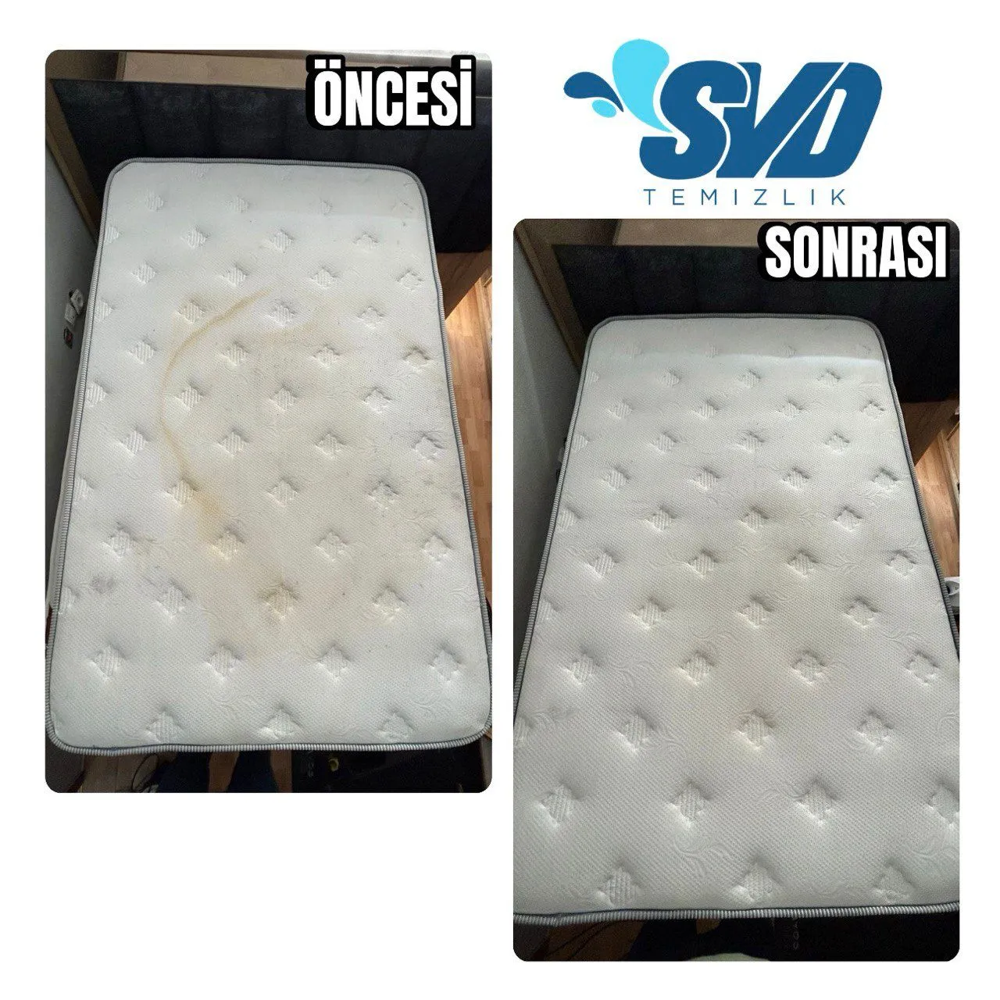

Neden Yatak Yıkatmalısınız? Yataklar Ne Kadar Kirli?
Ömrümüzün üçte biri yatakta geçer. Gece uykusu sırasında salgıladığımız ter, dökülen deri hücreleri zamanla yatak kumaşının altına işler. Bu organik atıklar, gözle görülmeyen mikroskobik canlılar olan toz akarları (maytlar) için mükemmel bir besin kaynağı ve üreme alanıdır.
Zamanla biriken bu kirler astım, bronşit, kronik yorgunluk ve cilt alerjilerine zemin hazırlar. Özellikle küçük çocuklar ve alerjik bünyeliler için yatak temizliği hayati öneme sahiptir.
Profesyonel Yatak Yıkama Aşamalarımız
- Ultra Güçlü Vakum: Yüzeydeki saç tellerinin, kepeklerin ve döküntülerin yüksek emiş gücüyle çekilmesi.
- Biyolojik İlaçlama: Özellikle sararmış ter ve idrar lekelerine özel enzim parçalayıcı organik solüsyon uygulaması. Kötü kokuların kaynağında yok edilmesi.
- Buhar Duşu (Sterilizasyon): 140 derece kızgın buhar ile kumaş yüzeyine buhar basılması. Bu sayede bakteri ve akar (mayt) larvaları anında ölür.
- Fırçalama: Antibakteriyel şampuanla bezeli kumaşın hassas makine fırçasıyla derinlemesine yıkanması, kirlerin yüzeye kusmasının sağlanması.
- Son Vakum ve Kurutma: İki veya üç motorlu profesyonel sanayi tipi vakum makinesi ile kirli suyun ve tüm tortuların çekilmesi.
Sıkça Sorulan Sorular
Evet. Yatak kumaşları ter ve idrar gibi sıvıları emer ve oksitlenerek sararır. Özel bazlı leke sökücülerimiz ile bu lekelerin %95 oranında tamamen kaybolmasını sağlıyoruz.
Kesinlikle. Kızgın buhar jeneratörlerimizle yatağınızın her yüzeyine yüksek derecede buhar veriyoruz. Bu derece yüksek ısı, maytları ve bakterileri anında yok eder.